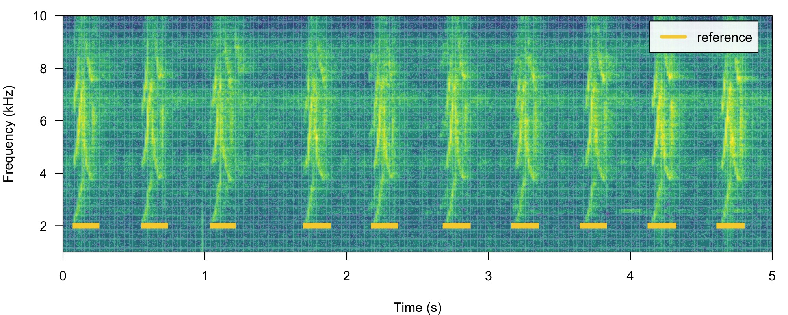
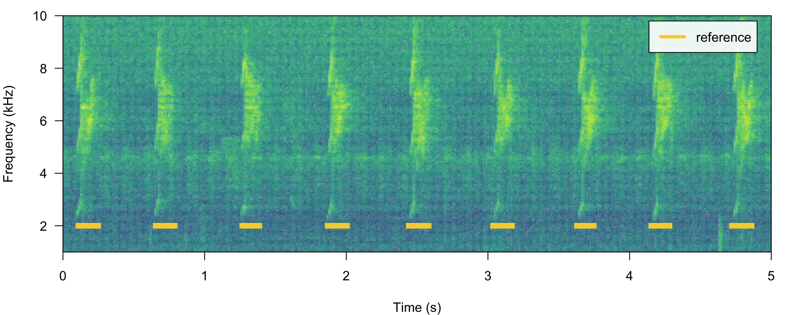
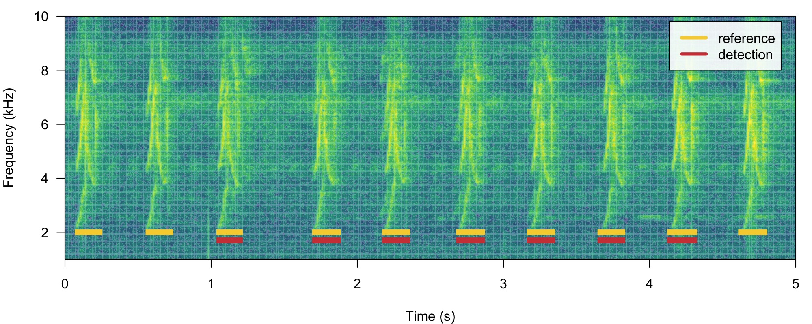
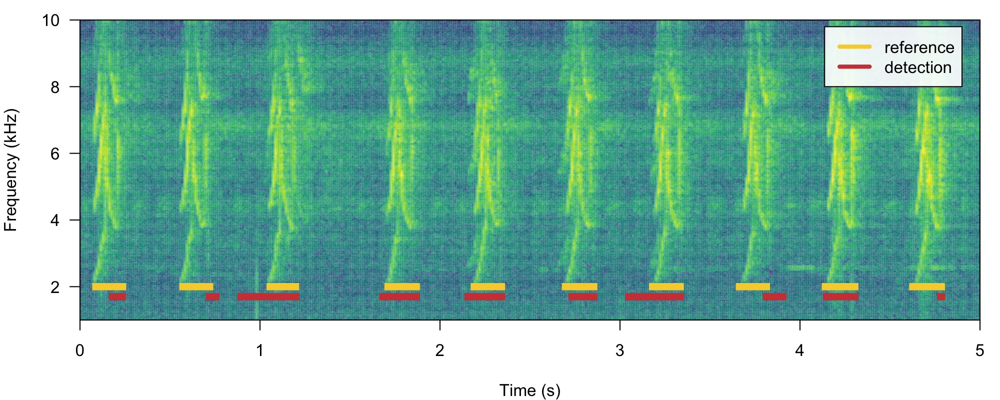
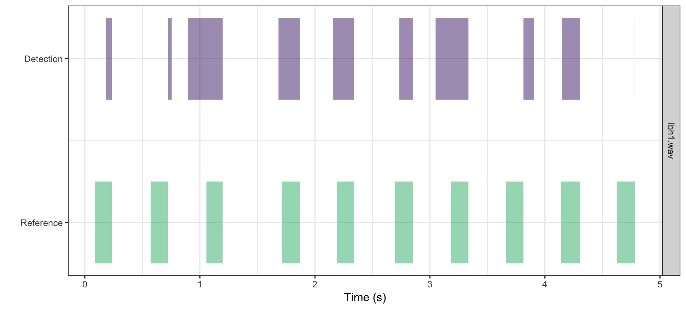
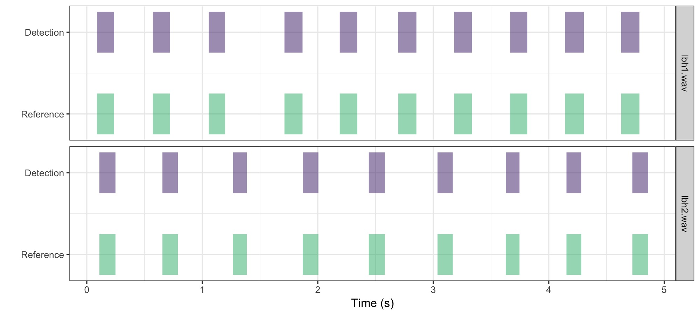

Optimizing sound event detection
Marcelo Araya-Salas, PhD
2025-07-26
Source:vignettes/intro_to_ohun.Rmd
intro_to_ohun.Rmd
ohun is intended to facilitate the automated detection of sound events, providing functions to diagnose and optimize detection routines. Detections from other software can also be explored and optimized. This vignette provides a general overview of sound event optimization in ohun as well as basic concepts from signal detection theory.
The main features of the package are:
- The use of reference annotations for detection optimization and diagnostic
- The use of signal detection theory indices to evaluate detection performance
The package offers functions for:
- Curate references and acoustic data sets
- Diagnose detection performance
- Optimize detection routines based on reference annotations
- Energy-based detection
- Template-based detection
All functions allow the parallelization of tasks, which distributes the tasks among several processors to improve computational efficiency. The package works on sound files in ‘.wav’, ‘.mp3’, ‘.flac’ and ‘.wac’ format.
The package can be installed from CRAN as follows:
# From CRAN would be
install.packages("ohun")
#load package
library(ohun)To install the latest developmental version from github you will need the R package remotes:
# install package
remotes::install_github("maRce10/ohun")
#load packages
library(ohun)
library(tuneR)
library(warbleR)Automatic sound event detection
Finding the position of sound events in a sound file is a challenging task. ohun offers two methods for automated sound event detection: template-based and energy-based detection. These methods are better suited for highly stereotyped or good signal-to-noise ratio (SNR) sounds, respectively. If the target sound events don’t fit these requirements, more elaborated methods (i.e. machine learning approaches) are warranted:
Also note that the presence of other sounds overlapping the target sound events in time and frequency can strongly affect detection performance for the two methods in ohun.
Still, a detection run using other software can be optimized with the tools provided in ohun.
Signal detection theory applied to bioacoustics
Broadly speaking, signal detection theory deals with the process of recovering signals (i.e. target signals) from background noise (not necessarily acoustic noise) and it’s widely used for optimizing this decision making process in the presence of uncertainty. During a detection routine, the detected ‘items’ can be classified into 4 classes:
- True positives (TPs): signals correctly identified as ‘signal’
- False positives (FPs): background noise incorrectly identified as ‘signal’
- False negatives (FNs): signals incorrectly identified as ‘background noise’
- True negatives (TNs): background noise correctly identified as ‘background noise’
Several additional indices derived from these indices are used to evaluate the performance of a detection routine. These are three useful indices in the context of sound event detection included in ohun:
- Recall: correct detections relative to total references (a.k.a. true positive rate or sensitivity; TPs / (TPs + FNs))
- Precision: correct detections relative to total detections (TPs / (TPs + FPs)).
- F score: combines recall and precision as the harmonic mean of these two, so it provides a single value for evaluating performance (a.k.a. F-measure or Dice similarity coefficient).
(Metrics that make use of ‘true negatives’ cannot be easily applied in the context of sound event detection as noise cannot always be partitioned in discrete units)
A perfect detection will have no false positives or false negatives, which will result in both recall and precision equal to 1. However, perfect detection cannot always be reached and some compromise between detecting all target signals plus some noise (recall = 1 & precision < 1) and detecting only target signals but not all of them (recall < 1 & precision = 1) is warranted. The right balance between these two extremes will be given by the relative costs of missing signals and mistaking noise for signals. Hence, these indices provide an useful framework for diagnosing and optimizing the performance of a detection routine.
The package ohun provides a set of tools to evaluate the performance of an sound event detection based on the indices described above. To accomplish this, the result of a detection routine is compared against a reference table containing the time position of all target sound events in the sound files. The package comes with an example reference table containing annotations of long-billed hermit hummingbird songs from two sound files (also supplied as example data: ‘lbh1’ and ‘lbh2’), which can be used to illustrate detection performance evaluation. The example data can be explored as follows:
# load example data
data("lbh1", "lbh2", "lbh_reference")
lbh_reference
[30mObject of class
[1m'selection_table'
[22m
[39m
[90m* The output of the following call:
[39m
[90m
[3mwarbleR::selection_table(X = lbh_reference)
[23m
[39m
[90m
[1m
Contains:
[22m
* A selection table data frame with 19 rows and 6 columns:
[39m
[90m|sound.files | selec| start| end| bottom.freq| top.freq|
[39m
[90m|:-----------|-----:|------:|------:|-----------:|--------:|
[39m
[90m|lbh2.wav | 1| 0.1092| 0.2482| 2.2954| 8.9382|
[39m
[90m|lbh2.wav | 2| 0.6549| 0.7887| 2.2954| 9.0426|
[39m
[90m|lbh2.wav | 3| 1.2658| 1.3856| 2.2606| 9.0774|
[39m
[90m|lbh2.wav | 4| 1.8697| 2.0053| 2.1911| 8.9035|
[39m
[90m|lbh2.wav | 5| 2.4418| 2.5809| 2.1563| 8.6600|
[39m
[90m|lbh2.wav | 6| 3.0368| 3.1689| 2.2259| 8.9382|
[39m
[90m... and 13 more row(s)
[39m
[90m
* A data frame (check.results) with 19 rows generated by check_sels() (as an attribute)
[39m
[90mcreated by warbleR 1.1.27
[39mThis is a ‘selection table’, an object class provided by the package
warbleR (see selection_table()
for details). Selection tables are basically data frames in which the
contained information has been double-checked (using warbleR’s check_sels()).
But they behave pretty much as data frames and can be easily converted
to data frames:
# convert to data frame
as.data.frame(lbh_reference) sound.files selec start end bottom.freq top.freq
1 lbh2.wav 1 0.109161 0.2482449 2.2954 8.9382
2 lbh2.wav 2 0.654921 0.7887232 2.2954 9.0426
3 lbh2.wav 3 1.265850 1.3855678 2.2606 9.0774
4 lbh2.wav 4 1.869705 2.0052678 2.1911 8.9035
5 lbh2.wav 5 2.441769 2.5808529 2.1563 8.6600
6 lbh2.wav 6 3.036825 3.1688667 2.2259 8.9382
7 lbh2.wav 7 3.628617 3.7465742 2.3302 8.6252
8 lbh2.wav 8 4.153288 4.2818085 2.2954 8.4861
9 lbh2.wav 9 4.723673 4.8609963 2.3650 8.6948
10 lbh1.wav 10 0.088118 0.2360047 1.9824 8.4861
11 lbh1.wav 11 0.572290 0.7201767 2.0520 9.5295
12 lbh1.wav 12 1.056417 1.1972614 2.0868 8.4861
13 lbh1.wav 13 1.711338 1.8680274 1.9824 8.5905
14 lbh1.wav 14 2.190249 2.3416568 2.0520 8.5209
15 lbh1.wav 15 2.697143 2.8538324 1.9824 9.2513
16 lbh1.wav 16 3.181315 3.3344833 1.9129 8.4861
17 lbh1.wav 17 3.663719 3.8133662 1.8781 8.6948
18 lbh1.wav 18 4.140816 4.3045477 1.8433 9.2165
19 lbh1.wav 19 4.626712 4.7851620 1.8085 8.9035All ohun functions
that work with this kind of data can take both selection tables and data
frames. Spectrograms with highlighted sound events from a selection
table can be plotted with the function label_spectro()
(this function only plots one wave object at the time, not really useful
for long files):
# save sound file
tuneR::writeWave(lbh1, file.path(tempdir(), "lbh1.wav"))
# save sound file
tuneR::writeWave(lbh2, file.path(tempdir(), "lbh2.wav"))
# print spectrogram
label_spectro(wave = lbh1, reference = lbh_reference[lbh_reference$sound.files == "lbh1.wav", ], hop.size = 10, ovlp = 50, flim = c(1, 10))
# print spectrogram
label_spectro(wave = lbh2, reference = lbh_reference[lbh_reference$sound.files == "lbh2.wav", ], hop.size = 10, ovlp = 50, flim = c(1, 10))
The function diagnose_detection() evaluates the
performance of a detection routine by comparing it to a reference table.
For instance, a perfect detection is given by comparing
lbh_reference to itself:
lbh1_reference <-
lbh_reference[lbh_reference$sound.files == "lbh1.wav",]
# diagnose
diagnose_detection(reference = lbh1_reference, detection = lbh1_reference)[, c(1:3, 7:9)]
[30mlabeling detections (step 0 of 0):
[39m detections true.positives false.positives overlap recall precision
1 10 10 0 1 1 1We will work mostly with a single sound file for convenience but the functions can work on several sound files at the time. The files should be found in a single working directory. Although the above example is a bit silly, it shows the basic diagnostic indices, which include basic detection theory indices (‘true.positives’, ‘false.positives’, ‘false.negatives’, ‘recall’ and ‘precision’) mentioned above. We can play around with the reference table to see how these indices can be used to spot imperfect detection routines (and hopefully improve them!). For instance, we can remove some sound events to see how this is reflected in the diagnostics. Getting rid of some rows in ‘detection’, simulating a detection with some false negatives, will affect the recall but not the precision:
# create new table
lbh1_detection <- lbh1_reference[3:9,]
# print spectrogram
label_spectro(
wave = lbh1,
reference = lbh1_reference,
detection = lbh1_detection,
hop.size = 10,
ovlp = 50,
flim = c(1, 10)
)
# diagnose
diagnose_detection(reference = lbh1_reference, detection = lbh1_detection)[, c(1:3, 7:9)] detections true.positives false.positives overlap recall precision
1 7 7 0 1 0.7 1Having some additional sound events not in reference will do the opposite, reducing precision but not recall. We can do this simply by switching the tables:
# print spectrogram
label_spectro(
wave = lbh1,
detection = lbh1_reference,
reference = lbh1_detection,
hop.size = 10,
ovlp = 50,
flim = c(1, 10)
)
# diagnose
diagnose_detection(reference = lbh1_detection, detection = lbh1_reference)[, c(1:3, 7:9)] detections true.positives false.positives overlap recall precision
1 10 7 3 1 1 0.7The function offers three additional diagnose metrics:
-
Splits: detections that share overlapping reference
sounds with other detections
- Merges: detections that overlap with two or more reference sounds
- Proportional overlap of true positives: ratio of the time overlap of true positives with its corresponding sound event in the reference table
In a perfect detection routine split and merged positives should be 0 while proportional overlap should be 1. We can shift the start of sound events a bit to reflect a detection in which there is some mismatch to the reference table regarding to the time location of sound events:
# create new table
lbh1_detection <- lbh1_reference
# add 'noise' to start
set.seed(18)
lbh1_detection$start <-
lbh1_detection$start + rnorm(nrow(lbh1_detection), mean = 0, sd = 0.1)
## print spectrogram
label_spectro(
wave = lbh1,
reference = lbh1_reference,
detection = lbh1_detection,
hop.size = 10,
ovlp = 50,
flim = c(1, 10)
)
# diagnose
diagnose_detection(reference = lbh1_reference, detection = lbh1_detection) detections true.positives false.positives false.negatives splits merges overlap
1 10 5 5 5 0 0 0.7849767
recall precision f.score
1 0.5 0.5 0.5In addition, the following diagnostics related to the duration of the
sound events can also be returned by setting
time.diagnostics = TRUE. Here we tweak the reference and
detection data just to have some false positives and false
negatives:
# diagnose with time diagnostics
diagnose_detection(reference = lbh1_reference[-1, ], detection = lbh1_detection[-10, ], time.diagnostics = TRUE) detections true.positives false.positives false.negatives splits merges
1 9 5 4 4 0 0
mean.duration.true.positives mean.duration.false.positives
1 187 58
mean.duration.false.negatives overlap proportional.duration.true.positives recall
1 149 0.7849767 1.194993 0.5555556
precision f.score
1 0.5555556 0.5555556These additional metrics can be used to further filter out undesired
sound events based on their duration (for instance in a energy-based
detection as in energy_detector(), explained below).
Diagnostics can also be detailed by sound file:
# diagnose by sound file
diagnostic <-
diagnose_detection(reference = lbh1_reference,
detection = lbh1_detection,
by.sound.file = TRUE)
diagnostic sound.files detections true.positives false.positives false.negatives splits merges
1 lbh1.wav 10 5 5 5 0 0
overlap recall precision f.score
1 0.7849767 0.5 0.5 0.5These diagnostics can be summarized (as in the default
diagnose_detection() output) with the function
summarize_diagnostic():
# summarize
summarize_diagnostic(diagnostic) detections true.positives false.positives false.negatives splits merges overlap
1 10 5 5 5 0 0 0.7849767
recall precision f.score
1 0.5 0.5 0.5The match between reference and detection annotations can also be
visually inspected using the function plot_detection():
# ggplot detection and reference
plot_detection(reference = lbh1_reference, detection = lbh1_detection)
This function is more flexible than label_spectro() as
it can easily plot annotations from several sound files (include those
from long sound files):
# ggplot detection and reference
plot_detection(reference = lbh_reference, detection = lbh_reference)
Improving detection speed
Detection routines can take a long time when working with large amounts of acoustic data (e.g. large sound files and/or many sound files). These are some useful points to keep in mine when trying to make a routine more time-efficient:
- Always test procedures on small data subsets
-
template_detector()is faster thanenergy_detector() - Parallelization (see
parallelargument in most functions) can significantly speed-up routines, but works better on Unix-based operating systems (linux and mac OS) - Sampling rate matters: detecting sound events on low sampling rate
files goes faster, so we should avoid having nyquist frequencies
(sampling rate / 2) way higher than the highest frequency of the target
sound events (sound files can be downsampled using warbleR’s
fix_sound_files()) - Large sound files can make the routine crash, use
split_acoustic_data()to split both reference tables and files into shorter clips. - Think about using a computer with lots of RAM memory or a computer cluster for working on large amounts of data
-
thinningargument (which reduces the size of the amplitude envelope) can also speed-upenergy_detector()
Additional tips
- Use your knowledge about the sound event structure to determine the initial range for the tuning parameters in a detection optimization routine
- If people have a hard time figuring out where a target sound event occurs in a recording, detection algorithms will also have a hard time
- Several templates representing the range of variation in sound event structure can be used to detect semi-stereotyped sound events
- Make sure reference tables contain all target sound events and only the target sound events. The performance of the detection cannot be better than the reference itself.
- Avoid having overlapping sound events or several sound events as a single one (like a multi-syllable vocalization) in the reference table when running an energy-based detector
- Low-precision can be improved by training a classification model (e.g. random forest) to tell sound events from noise
Please cite ohun like this:
Araya-Salas, M. (2021), ohun: diagnosing and optimizing automated sound event detection. R package version 0.1.0.
References
- Araya-Salas, M. (2021), ohun: diagnosing and optimizing automated sound event detection. R package version 0.1.0.
- Araya-Salas M, Smith-Vidaurre G (2017) warbleR: An R package to streamline analysis of animal acoustic signals. Methods in Ecology and Evolution, 8:184-191.
- Khanna H., Gaunt S.L.L. & McCallum D.A. (1997). Digital spectrographic cross-correlation: tests of sensitivity. Bioacoustics 7(3): 209-234.
- Knight, E.C., Hannah, K.C., Foley, G.J., Scott, C.D., Brigham, R.M. & Bayne, E. (2017). Recommendations for acoustic recognizer performance assessment with application to five common automated signal recognition programs. Avian Conservation and Ecology,
- Macmillan, N. A., & Creelman, C.D. (2004). Detection theory: A user’s guide. Psychology press.
Session information
R version 4.5.1 (2025-06-13)
Platform: aarch64-apple-darwin20
Running under: macOS Sonoma 14.7.6
Matrix products: default
BLAS: /Library/Frameworks/R.framework/Versions/4.5-arm64/Resources/lib/libRblas.0.dylib
LAPACK: /Library/Frameworks/R.framework/Versions/4.5-arm64/Resources/lib/libRlapack.dylib; LAPACK version 3.12.1
locale:
[1] en_US.UTF-8/en_US.UTF-8/en_US.UTF-8/C/en_US.UTF-8/en_US.UTF-8
time zone: UTC
tzcode source: internal
attached base packages:
[1] stats graphics grDevices utils datasets methods base
other attached packages:
[1] ggplot2_3.5.2 warbleR_1.1.35 NatureSounds_1.0.5 knitr_1.50
[5] seewave_2.2.3 tuneR_1.4.7 ohun_1.0.3
loaded via a namespace (and not attached):
[1] gtable_0.3.6 rjson_0.2.23 xfun_0.52 bslib_0.9.0
[5] vctrs_0.6.5 tools_4.5.1 bitops_1.0-9 curl_6.4.0
[9] parallel_4.5.1 tibble_3.3.0 proxy_0.4-27 pkgconfig_2.0.3
[13] KernSmooth_2.23-26 checkmate_2.3.2 RColorBrewer_1.1-3 desc_1.4.3
[17] lifecycle_1.0.4 compiler_4.5.1 farver_2.1.2 textshaping_1.0.1
[21] brio_1.1.5 htmltools_0.5.8.1 class_7.3-23 sass_0.4.10
[25] RCurl_1.98-1.17 yaml_2.3.10 pkgdown_2.1.3 pillar_1.11.0
[29] jquerylib_0.1.4 MASS_7.3-65 classInt_0.4-11 cachem_1.1.0
[33] viridis_0.6.5 digest_0.6.37 sf_1.0-21 labeling_0.4.3
[37] fastmap_1.2.0 grid_4.5.1 cli_3.6.5 magrittr_2.0.3
[41] e1071_1.7-16 withr_3.0.2 scales_1.4.0 backports_1.5.0
[45] rmarkdown_2.29 httr_1.4.7 signal_1.8-1 igraph_2.1.4
[49] gridExtra_2.3 ragg_1.4.0 pbapply_1.7-4 evaluate_1.0.4
[53] dtw_1.23-1 fftw_1.0-9 testthat_3.2.3 viridisLite_0.4.2
[57] rlang_1.1.6 Rcpp_1.1.0 glue_1.8.0 DBI_1.2.3
[61] jsonlite_2.0.0 R6_2.6.1 systemfonts_1.2.3 fs_1.6.6
[65] units_0.8-7